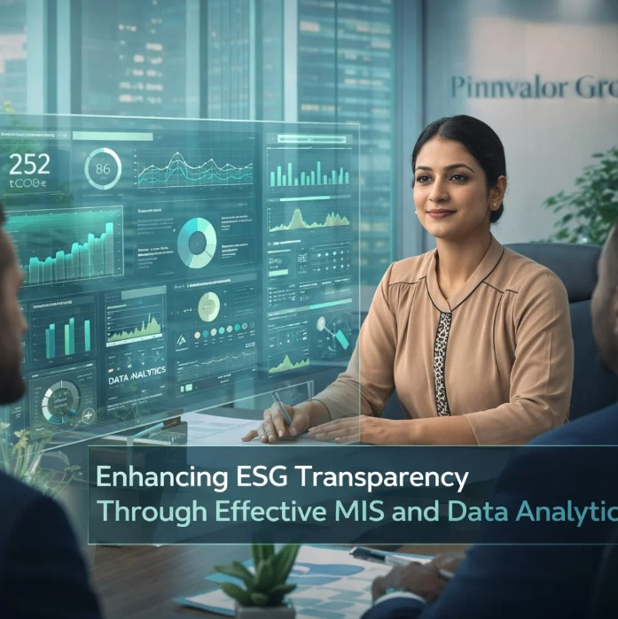

Enhancing ESG Transparency Through Effective MIS and Data Analytics
In today’s business environment, transparency is no longer optional—it’s a strategic imperative. Stakeholders, including investors, regulators, and customers, increasingly demand reliable insights into a company’s Environmental, Social, and Governance (ESG) performance. However, ESG reporting is often complex, fragmented, and data-intensive. This is where Management Information Systems (MIS) combined with data analytics play a transformative role.
Is your ESG reporting building trust—or raising more questions?
Don’t just track ESG metrics—understand them, act on them, and lead with them. That’s where real sustainability begins.
By integrating ESG metrics into robust MIS frameworks, organizations can move beyond compliance and build trust through accurate, real-time, and actionable reporting.
Understanding ESG Transparency
ESG transparency refers to the clear, consistent, and accurate disclosure of a company’s sustainability practices and impacts.
- Environmental: Carbon emissions, energy usage, waste management
- Social: Employee welfare, diversity, community impact
- Governance: Board structure, ethics, compliance, risk management
Transparent ESG reporting helps organizations:
- Build investor confidence
- Meet regulatory requirements
- Strengthen brand reputation
- Enable informed decision-making
The Role of MIS in ESG Reporting
1. Centralized Data Management
MIS consolidates ESG-related data from multiple sources—finance, HR, and operations—into a unified system, reducing inconsistencies and duplication.
2. Standardization and Accuracy
With predefined templates and automated workflows, MIS ensures ESG data is standardized, comparable, and less prone to manual errors.
3. Real-Time Reporting
Modern MIS tools enable real-time dashboards, allowing management to track ESG performance continuously rather than relying on periodic reports.
4. Regulatory Compliance
MIS helps organizations align with global ESG frameworks such as GRI, SASB, and IFRS Sustainability Standards by structuring data in required formats.
Power of Data Analytics in ESG Metrics
1. Predictive Insights
Advanced analytics can forecast environmental risks, such as carbon footprint trends or resource shortages, enabling proactive strategies.
2. Performance Benchmarking
Companies can compare ESG performance against industry peers and identify areas for improvement.
3. Risk Identification
Analytics tools detect anomalies and potential compliance risks, strengthening governance practices.
4. Impact Measurement
Organizations can quantify the effectiveness of sustainability initiatives, such as reductions in emissions or improvements in employee engagement.

Key ESG Metrics Enabled by MIS
Environmental Metrics
- Greenhouse gas emissions (Scope 1, 2, 3)
- Energy consumption and efficiency
- Water usage and waste recycling rates
Social Metrics
- Employee turnover and satisfaction
- Diversity and inclusion ratios
- Health and safety statistics
Governance Metrics
- Board diversity and independence
- Anti-corruption compliance
- Audit and risk management effectiveness
Benefits of MIS-Driven ESG Transparency
- Improved Decision-Making: Access to accurate and timely ESG data
- Enhanced Stakeholder Trust: Reliable and transparent reporting
- Operational Efficiency: Automation reduces manual effort
- Competitive Advantage: Strong ESG practices attract investors
Challenges in Implementing MIS for ESG
- Data silos across departments
- Lack of standardization in ESG frameworks
- Data quality and completeness issues
- Integration with legacy systems
Best Practices for Effective ESG Reporting Using MIS
- Adopt a Unified ESG Framework: Align with global standards
- Invest in Scalable MIS Solutions: Handle growing data needs
- Leverage Advanced Analytics: Use AI and machine learning
- Ensure Data Governance: Maintain accuracy and consistency
- Promote Cross-Functional Collaboration: Integrate teams across functions
Future Outlook: ESG and Digital Transformation
The future of ESG reporting lies in digital innovation. Technologies such as AI, blockchain, and IoT will enhance data accuracy, traceability, and transparency. MIS will evolve into intelligent platforms that not only report ESG metrics but also guide organizations toward sustainable growth.
Conclusion
Enhancing ESG transparency is no longer just about compliance—it’s about building a sustainable and trustworthy business. By leveraging effective MIS and data analytics, organizations can transform ESG reporting into a strategic advantage and deliver meaningful, transparent, and impactful sustainability performance.